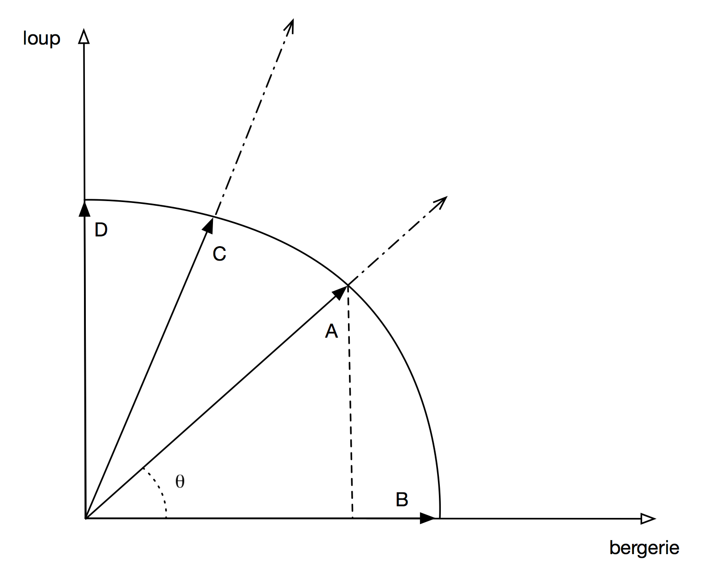
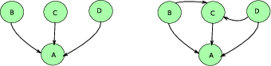
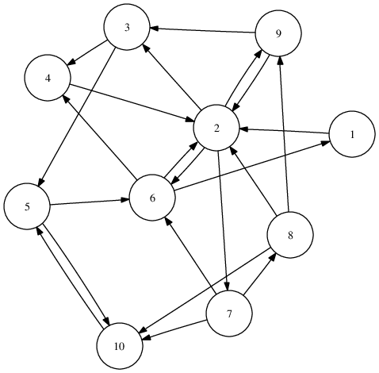
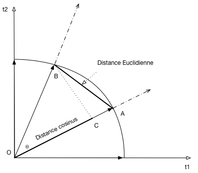

Recherche avec classement¶
Supports complémentaires:
Un cours complet en ligne (en anglais): http://www-nlp.stanford.edu/IR-book/. Certaines parties du cours empruntent des exemples à cette source.
S1: recherche avec classement¶
Supports complémentaires:
Le mode d’interrogation classique en base de données consiste à exprimer des critères de recherche et à produire en sortie les données qui satisfont exactement ces critères. En d’autres termes, dans le cas d’une base documentaire, on peut déterminer qu’un document est ou n’est pas dans le résultat. Cette décision univoque correspond au modèle de requêtes Booléennes présenté précécemment.
Notions de base: espace métrique, distance et similarité¶
Dans le cas typique d’un document textuel, il est illusoire de vouloir effectuer une recherche exacte en tentant de produire comme critère la chaîne de caractères complète du document, voire même une sous-chaîne. La même remarque s’applique à des objets complexes ou multimédia (images, vidéos, etc.). La logique est alors plutôt d’interpréter la requête comme un besoin, et d’identifier les documents les plus « proches » du besoin. En recherche d’information (RI), on raisonne donc plutôt en terme de pertinence pour décider si un document fait ou non partie du résultat d’une recherche. La formalisation de ces notions de besoin et de pertinence est au centre des méthodes de RI.
En particulier, la formalisation de la pertinence consiste à en donner une expression quantitative. Pour cela, l’approche classique consiste
à définir un espace métrique E doté d’une fonction de distance \(m_E\),
à définir une fonction \(f\) de l’espace des documents vers E; cette fonction s’applique également à la requête q, vue comme un document;
enfin, on mesure la pertinence (ou similarité) entre deux documents \(d_1\) et \(d_2\) comme l’inverse de la distance entre \(f(d_1)\) et \(f(d_2)\).
\[sim(d, q) = \frac{1}{m_E(f(d_1), f(d_2))}\]
On obtient une mesure de la similarité, ou score, mesurant la proximité de deux documents (ou, plus précisément, des vecteurs représentant ces documents). Il reste à interpréter la requête \(q\) comme un document et à évaluer \(sim(f(d), f(q))\) pour chaque document d afin d’évaluer la pertinence d’un document vis-à-vis du besoin exprimé par la requête.
Avec cette approche, contrairement aux requêtes Booléennes, on ne peut souvent plus dire de manière stricte qu’un document d n’appartient pas au résultat d’une recherche. Il est plus correct de dire que d est plus ou moins pertinent. Cela rend les résultats beaucoup plus riches, et offre à l’utilisateur la possibilité d’éviter le « tout ou rien » de l’approche Booléenne.
Note
Reportez-vous au chapitre Introduction à la recherche d’information pour une discussion introductive sur les notions de faux et vrais positifs, de rappel et de précision.
La contrepartie de cette flexibilité est l’abondance des candidats potentiels et la nécessité de les classer en fonction de leur pertinence/score. Le rôle d’un moteur de recherche consiste donc (conceptuellement), pour chaque requête q, à calculer le score \(s_i = sim(q, d_i)\) pour chaque document \(d_i\) de la collection, à trier tous les documents par ordre décroissant des scores et à présenter ce classement à l’utilisateur.
Important
Il faut ajouter une contrainte de temps: le résultat doit être disponible en quelques dizièmes de secondes, même dans le cas de collections comprenant des millions, des centaines de millions ou des milliards de documents (cas du Web). La performance de la recherche s’appuie sur les structures d’index inversés et des optimisations fines qui dépassent le cadre de ce cours: reportez-vous, par exemple, au livre en ligne mentionné en début de chapitre.
En pratique, le calcul du score pour tous les documents n’est bien sûr pas faisable (ni souhaitable d’ailleurs), et le moteur de recherche dispose de structures de données qui vont lui permettre de déterminer rapidement les documents ayant le meilleur score. Ces documents (disons les 10 ou 20 premiers, typiquement) sont présentés à l’utilisateur, et le reste de la liste est calculé à la demande si besoin est. Dans le cas d’une interface interactive (et si le classement est réellement pertinent vis-à-vis du besoin), il est rare qu’un utilisateur aille au-delà de la seconde, voire même de la première page.
Vocabulaire. En résumé, voici les points à retenir.
on effectue des calculs dans un espace métrique, le plus souvent un espace vectoriel;
pour chaque document, on produit un objet de l’espace métrique, appelé descripteur, qui a le plus souvent la forme d’un vecteur (features vector);
on applique le même traitement à la requête q pour obtenir un descripteur \(v_q\);
le score est une mesure de la pertinence d’un document \(d_i\) par rapport au besoin exprimé par la requête q;
le calcul du score s’appuie sur la mesure de la distance entre le descripteur de \(d_i\) et celui de q.
Ces principes étant posés, voyons une application concrète (quoique simplifiée pour l’instant, et peu satisfaisante en pratique) au cas de la recherche plein texte.
Application à la recherche plein texte¶
Important
La méthode présentée ci-dessous n’est qu’une première approche, à la fois très simplifiée et présentant de sévères défauts par rapport à la méthode générale que nous présenterons ensuite.
Pour commencer, on suppose connu l’ensemble \(V=\{t_1, t_2, \cdots, t_n\}\) de tous les termes utilisables pour la rédaction d’un document et on définit E comme l’espace de tous les vecteurs constitués de n coordonnées valant soit 0, soit 1 (soit, en notation mathématique, \(E = \{0, 1\}^{n}\)). Ce sont nos descripteurs.
Par exemple, on considère que le vocabulaire est {« papa », « maman », « gateau », « chocolat », « haut », « bas »}. Nos vecteurs sont donc constitués de 6 coordonnées valant soit 0, soit 1. Il faut alors définir la fonction \(f\) qui associe un document d à son descripteur (vecteur) \(v = f(d)\). Voici cette définition:
C’est exactement la représentation que nous avons adoptée jusqu’à présent. À chaque document on associe une séquence (un vecteur) de 1 ou de 0 selon que le terme \(t_i\) est présent ou non dans le document.
Prenons un premier exemple. Le document \(d_{maman}\):
"maman est en haut, qui fait du gateau"
sera représenté par le descripteur/vecteur \([0, 1, 1, 0, 1, 0]\). Je vous laisse calculer le vecteur de ce second document \(d_{papa}\):
"papa est en bas, qui fait du chocolat"
Note
Remarquez que l’on choisit délibérément d’ignorer certains mots considérés comme peu représentatifs du contenu du document. Ce sont les stop words (mots inutiles) comme « est », « en », « qui », « fait », etc.
Note
Remarquez également que l’ordre des mots dans le document est ignoré par cette représentation qui considère un texte comme un « sac de mots » (bag of words). Si on prend un document contenant les deux phrases ci-dessus, on ne sait plus distinguer si papa est en haut ou en bas, ou si maman fait du gateau ou du chocolat.
Maintenant, contrairement à la recherche Booléenne dans laquelle on vérifiait que, pour chaque terme requis, la position correspondante dans le vecteur d’un document était à 1, on va appliquer une fonction de distance sur les vecteurs afin d’obtenir une valeur entre 0 et 1 mesurant la pertinence. Un candidat naturel est la distance Euclidienne dont nous rappelons la définition, pour deux vecteurs \(v_1\) et \(v_2\).
Et la similarité est l’inverse de la distance.
On obtient une mesure de la similarité, ou score, mesurant la proximité de deux documents (ou, plus précisément, des vecteurs représentant ces documents).
Il reste à interpréter la requête comme un document et à évaluer \(sim(f(d), f(q))\) pour chaque document d et la requête q pour évaluer la pertinence d’un document vis-à-vis du besoin exprimé par la requête. La requête q par exemple:
"maman haut chocolat"
est donc transformée en un vecteur \(v_q = [0, 1, 0, 1, 1, 0]\). Pour le document \(d_{maman}\), on obtient un score de \(sim (v_q, d_{maman}) = \frac{1}{\sqrt{2}}\). À vous de calculer \(sim (v_q, d_{papa})\) et de vérifier que ce score est moins elevé, ce qui correspond à notre intuition. Notez quand même:
que « chocolat », un des mots-clés de q, n’apparaît pas dans le document \(d_{maman}\), malgré tout classé en tête;
qu’un seul terme est commun entre \(d_{papa}\) et q, et que le document est quand même (bien) classé;
qu’un document comme «
bébé mange sa soupe» obtiendrait un score non nul (lequel?) et serait donc lui aussi classé (si on ne met pas de borne à la valeur du score).
Une différence concrète très sensible (illustrée ci-dessus) avec les requêtes Booléennes est qu’il n’est pas nécessaire qu’un document contienne tous les termes de la requête pour que son score soit différent de 0.
Les limites de l’approche présentée jusqu’ici sont explorées dans des exercices. La méthode beaucoup plus robuste détaillée dans la prochaine section montrera aussi, par contraste, coment des facteurs comme la taille des documents, la taille du vocabulaire, le nombre d’occurrences d’un terme dans un document et la rareté de ce terme influent sur la précision du classement.


S2: recherche plein texte¶
Supports complémentaires:
Nous reprenons maintenant un approche plus solide pour la recherche plein texte, qui pour l’essentiel s’appuie sur les principes précédents, mais corrige les gros inconvénients que vous avez dû découvrir en complétant les exercices.
La méthode présentée dans ce qui suit est maintenant bien établie et utilisée, à quelques raffinements près, comme approche de base par tous les moteurs de recherche. Résumons (une nouvelle fois):
les documents (textuels) sont vus comme des sacs de mots, l’ordre entre les mots étant ignoré; on ne fera pas de différence entre un document qui dit que le mouton est dans la gueule du loup et un autre qui prétend que le loup est dans la gueule du mouton (?);
quand on parle de « mots », il faut bien comprendre: les termes obtenus par application d’un processus de simplification / normalisation lexicale déjà étudié;
un descripteur est associé à chaque document, dans un espace doté d’une fonction de distance qui permet d’estimer la similarité entre deux documents;
enfin, la requête elle-même est vue comme un document, et placée donc dans le même espace; on considère donc ici les requêtes exprimées comme une liste de mots, sans aucune construction syntaxique complémentaire.
Ceci posé, nous nous concentrons sur la fonction de similarité.
Note
« mot » et « terme » sont utilisés comme des synonymes à partir de maintenant.
Le poids des mots¶
Dans l’approche très simplifiée présentée ci-dessus, nous avons traité les mots uniformément, selon une approche Booléenne: 1 si le mot est présent dans le document, 0 sinon.
Pour obtenir des résultats de meilleure qualité, on va prendre en compte les degrés de pertinence et d’information portés par un terme, selon deux principes:
plus un terme est présent dans un document, plus il est représentatif du contenu du document;
moins un terme est présent dans une collection, et plus une occurrence de terme est significative.
De plus, on va tenter d’éliminer le biais lié à la longueur variable des documents. Il est clair que plus un document est long, et plus il contiendra de mots et de répétitions d’un même mot. Si on n’introduit pas un élément correctif, la longueur des documents a donc un impact fort sur le résultat d’une recherche et d’un classement, ce qui n’est pas forcément souhaitable.
En tenant compte de ces facteurs, on aboutit à affecter un poids à chaque mot dans un document, et à représenter ce dernier comme un vecteur de paires (mot, poids), ce qui peut être considéré comme une représentation compacte du contenu du document. La méthode devenue classique pour déterminer le poids est de combiner la fréquence des termes et la fréquence inverse (des termes) dans les documents, ce que l’on abrège par tf (term frequency) et idf (inverse document frequency).
La fréquence des termes¶
La fréquence d’un terme t dans un document d est le nombre d’occurrences de t dans d.
où \(n_{t,d}\) est le nombre d’occurrences de t” dans d. On représente donc un document par la liste des termes associés à leur fréquence. Si on prend une collection de documents, dans laquelle certains termes apparaissent dans plusieurs documents (ce qui est le cas normal), on peut représenter les tf par une matrice semblable à la matrice d’incidence déjà vue dans la cas Booléen. Celle ci-dessous correspond à une collection de trois documents, avec un vocabulaire constitué de 4 termes.
terme |
d1 |
d2 |
d3 |
|---|---|---|---|
voiture |
27 |
15 |
24 |
marais |
3 |
20 |
0 |
serpent |
0 |
25 |
29 |
baleine |
14 |
0 |
17 |
total |
44 |
60 |
70 |
Normalisation des tf¶
Il y a donc 44 termes dans le document d1, 60 dans le d2 et 70 dans le d3. Il est clair qu’il est difficile de comparer dans l’absolu des fréquences de terme pour des documents de longueur très différentes, car la probabilité qu’un terme apparaisse souvent augment avec la taille du document.
Pour s’affranchir de l’effet induit par la taille (qui amènerait à classer systématiquement en tête les documents longs), on normalise donc les valeurs des tf. Une méthode simple est, par exemple, de diviser chaque tf par le nombre total de termes dans le document, ce qui donnerait la matrice suivante:
terme |
d1 |
d2 |
d3 |
|---|---|---|---|
voiture |
27/44 |
15/60 |
24/70 |
marais |
3/44 |
20/60 |
0 |
serpent |
0 |
25/60 |
29/70 |
baleine |
14/44 |
0 |
17/70 |
Un calcul un peu plus sophistiqué consiste à considérer l’ensemble une colonne de la matrice d’incidence comme un vecteur dans un espace multidimensionel. Dans notre exemple l’espace est de dimension 4, chaque axe correspondant à l’un des termes. Le vecteur de d1 est (27, 3, 0, 14), celui de d2 (15,20, 25,0), etc. Pour normaliser ces vecteurs, on va diviser leurs coordonnées par leur norme euclidienne. Rappel: la norme d’un vecteur \(v = (x_1, x_2, \cdots, x_n)\) est
La norme du vecteur d1 est donc:
Celle de d2:
Celle de d3:
On voit que le résultat est assez différent de la simple somme des tf. L’interprétation des descripteurs de documents comme des vecteurs est à la base d’un calcul de similarité basé sur les cosinus, que nous détaillons ci-dessous.
La fréquence inverse dans les documents¶
La fréquence inverse d’un terme dans les documents (inverse document frequency, ou idf) mesure l’importance d’un terme par rapport à une collection D de documents. Un terme qui apparaît rarement peut être considéré comme plus caractéristique d’un document qu’un autre, très commun. On retrouve l’idée des mots inutiles, avec un raffinement consistant à mesurer le degré d’utilité.
L’idf d’un terme t est obtenu en divisant le nombre total de documents par le nombre de documents contenant au moins une occurrence de t. De plus, on prend le logarithme de cette fraction pour conserver cette valeur dans un intervalle comparable à celui du tf.
Notez que si on ne prenait pas le logarithme, la valeur de l’idf pourrait devenir très grande, et rendrait négligeable l’autre composante du poids d’un terme. La base du logarithme est 10 en général, mais quelle que soit la base, vous noterez que l’idf est nul dans le cas d’un terme apparaissant dans tous les documents (c’est clair? sinon réfléchissez!).
Reprenons notre matrice ci-dessus en supposant que la collection se limite aux trois documents. Alors
l’idf de « voiture » est 0, car il apparaît dans tous les documents. Intuitivement, « voiture » est (pour la collection étudiée) tellement courant qu’il n’apporte rien comme critère de recherche.
l’idf de « marais », « serpent » et « baleine » est \(log(3/2)\)
Dans un cas plus réaliste, un terme qui apparaît 100 fois dans une collection d’un million de documents aura un idf de \(log_{10}(1000000/100) = log_{10}(10000) = 4\) (en base 10). Un terme qui n’apparaît que 10 fois aura un idf de \(log_{10}(1000000/10) = log_{10}(100000) = 5\). Une valeur d’idf plus élevée indique le terme est relativement plus important car plus rare.
Le poids tf.idf¶
On peut combiner le tf (normalisé ou non) et l’idf pour obtenir le poids tf.idf d’un terme t dans un document. C’est simplement le produit des deux valeurs précédentes:
À chaque document d nous associons un vecteur \(v_d\) dont chaque composante \(v_d[i]\) contient le tf.idf du terme \(t_i\) pour d.
Si le tf n’est pas normalisé, les valeurs des tf.idf seront d’autant plus élevées que le document est long. En terme de stockage (et pour anticiper un peu sur la structure des index inversés), il est préférable de stocker
l’idf à part, dans une structure indexée par le terme,
la norme des vecteurs à part, dans une structure indexéee par les documents
et enfin de placer dans chaque cellule la valeur du tf.
On peut alors effectuer le produit tf.idf et la division par la norme au moment du calcul de la distance.
La similarité cosinus¶
Nous avons donc des vecteurs représentant les documents. La requête est elle aussi représentée par un vecteur dans lequel les coefficients des mots sont à 1. Comment calculer la distance entre ces vecteurs? Si on prend comme mesure la norme de la différence entre deux vecteurs comme nous l’avons fait initialement, des anomalies sévères apparaissent car deux documents peuvent avoir des contenus semblables mais des tailles très différentes. La distance Euclidienne n’est donc pas un bon candidat.
On pourrait mesure la distance euclidienne entre les vecteurs normalisés. Une mesure plus adaptée en pratique est la similarité cosinus. Commençons par quelques rappels, en commençant par la formule du produit scalaire de deux vecteurs.
où \(\theta\) désigne l’angle entre les deux vecteurs et \(||v||\) la norme d’un vecteur v (sa longueur Euclidienne).
On en déduit donc que le cosinus de l’angle entre deux vecteurs satisfait:
Quel est l’intérêt de prendre ce cosinus comme mesure de similarité? L’idée est que l’on compare la direction de deux vecteurs, indépendamment de leurs longueurs. La Fig. 40 montre la représentation des vecteurs pour nos documents de l’exercice Ex-S1-1. Les vecteurs en ligne pleine sont les vecteurs unitaires, normalisés, les lignes pointillées montrant les vecteurs complets. Pour des raisons d’illustration, l’espace est réduit à deux dimensions correspondant aux deux termes, « loup » et « bergerie ». Il faut imaginer un espace vectoriel de dimension n, n étant le nombre de termes dans la collection, et donc potentiellement très grand.
{kind=link}

Fig. 40 Illustration de la similarité cosinus¶
Les documents (B) et (D) contiennent respectivement une occurrence de « bergerie » et une de « loup »: ils sont alignés avec les axes respectifs.
Le document (A) contient une occurrence de « loup » et une de « bergerie » et fait donc un angle de 45 degrés avec l’abcisse: le cosinus de cet angle, égal à \(\sqrt{2}/2\), représente la similarité entre A et B.
En ce qui concerne C, « loup » est mentionné deux fois et « bergerie » une, d’où un angle plus important avec l’abcisse.
Le fait d’avoir comme dénominateur dans la formule le produit des normes revient à normaliser le calcul en ne considérant que des vecteurs de longueur unitaire. La mesure satisfait aussi des conditions satisfaisantes intuitivement:
l’angle entre deux vecteurs de même direction est 0, le cosinus vaut 1;
l’angle entre deux vecteurs orthogonaux, donc « indépendants » (aucun terme en commun), est 90 degrés, le cosinus vaut 0;
toutes les autres valeurs possibles (dans la mesure où les coefficients de nos vecteurs sont positifs) varient continuement entre 0 et 1 avec la variation de l’angle entre 0 et 90 degrés.
Dernier atout: la similarité cosinus est très simple à calculer, et très rapide pour des vecteurs comprenant de nombreuses composantes à 0, ce qui est le cas pour la représentation des documents.
Note
La similarité cosinus n’est pas une distance au sens strict du terme (l’inégalité triangulaire n’est pas respectée), mais ses propriétés en font un excellent candidat.
Passons à la pratique sur notre exemple de trois documents représentés par la matrice donnée précédemment. On va ignorer l’idf pour faire simple, et se contenter de prendre en compte le tf.
Commençons par une requête simplissime: « voiture ». Cette requête est représentée dans l’espace de dimension 4 de notre vocabulaire par le vecteur (1, 0, 0, 0), dont la norme est 1. On pourrait croire qu’il suffit de prendre le classement des tf du terme concerné, sans se lancer dans des calculs compliqués, auquel cas d1 arriverait en tête juste devant d3. Erreur! Ce qui compte ce n’est pas la fréquence d’un terme, mais sa proportion par rapport aux autres. Il faut appliquer le calcul cosinus rigoureusement.
Calculons donc les cosinus. Pour d1, le cosinus vaut est le produit scalaire des vecteurs (27, 3, 0, 14) et (1, 0, 0, 0), divisé par le produit de la norme de ces deux vecteurs:
Pour les autres documents:
Pour d2, le cosinus vaut : \(\frac{15 + 0 + 0 + 0}{1 \times 35,35} = 0,424\)
Pour d3, le cosinus vaut : \(\frac{24 + 0 +0 +0}{1,41 \times 41,3} = 0,58\)
Le classement est d1, d3, d2, et on voit que d1 l’emporte assez nettement sur d3 alors que le nombre d’occurrences du terme « voiture » est à peu près le même dans les deux cas. Explication: d1 parle essentiellement de voiture, le second terme le plus important, « baleine », ayant moins d’occurrences. Dans d3 au contraire, « serpent » est le terme principal, « voiture » arrivant en second. Le document d1 est donc plus pertinent pour la requête et doit être classé en premier.
Prenons un second exemple, « voiture » et « baleine ». Remarquons d’abord que les coefficients de la requête sont (1, 0, 0, 1) et sa norme \(\sqrt{1+1} = 1,41\). Voici les calculs cosinus:
Pour d1, le cosinus vaut : \(\frac{27 + 14}{1,41 \times 30,56} = 0,95\)
Pour d2, le cosinus vaut : \(\frac{15 + 0}{1,41 \times 35,35} = 0,30\)
Pour d3, le cosinus vaut : \(\frac{24 + 17}{1,41 \times 41,3} = 0,70\)
L’ordre est donc d1, d3, d2. Le document d3 présente un meilleur équilibre
entre les composantes voiture et baleine, mais, contrairement
à d1, il a une autre composante forte pour serpent
ce qui diminue sa similarité.
S3: l’algorithme PageRank¶
Note
Cette session est proposée en complément au cours mais ne fait pas partie du contenu évalué à l’examen.
Supports complémentaires:
Les pages Web sont des documents particuliers : ils contiennent du texte, mais aussi des liens hypertextes qui permettent de passer d’une page à une autre. On peut donc voir le Web comme un (gigantesque) graphe orienté, dont les sommets sont des pages et les liens sont les arcs du graphe. Ce constat a amené de grands algorithmes pour améliorer la recherche d’information sur le Web : le PageRank et HITS. Je vais détailler le fonctionnement du premier, pour le second vous pouvez consulter la section correspondante dans le livre « Web data management » (lien vers le chapitre: http://webdam.inria.fr/Jorge/files/wdm-websearch.pdf).
Le problème de la mesure TF-IDF détaillée précédemment, c’est qu’elle ne parvient pas à distinguer le vrai du faux : deux pages Web portant sur le même sujet, avec les mêmes fréquences d’apparition des mots mais affirmant des choses opposées, seront classées de la même manière. Pourtant, les utilisateurs ont besoin d’en trouver facilement une et apprécient de ne pas voir l’autre (qui contient de fausses informations). L’idée du PageRank, c’est de profiter de la structure du graphe pour améliorer le classement TF-IDF en distinguant les pages « faisant autorité » des pages dont on peut se passer. Les liens sont en effet très parlants : une page « de référence » est beaucoup citée (de nombreux liens pointent vers elle), alors qu’une page obscure est généralement assez isolée dans le graphe.
Le PageRank a été élaboré par Larry Page et Serguei Brin, les fondateurs de Google, et publié dans un article de recherche lorsqu’ils étaient étudiants à l’université Stanford (lien fou). L’algorithme formalise mathématiquement l’intuition du paragraphe précédent, en imaginant une marche aléatoire dans le graphe du Web, et en estimant finement la probabilité que cette marche aléatoire s’arrête sur une page donnée. Plus il y a de liens qui mènent vers une page, plus elle est importante (pour les utilisateurs qui créent les pages), plus cette probabilité est élevée : c’est le score PageRank.
Un cas simple¶
Regardons un graphe du Web simplifié à l’extrême, où il n’y aurait que 4 pages (nommées A, B, C et D) et reliées comme dans la figure Fig. 42.
{kind=link}

Fig. 42 Deux graphes simples¶
Pour le graphe de gauche, si l’on marche aléatoirement sur ce graphe, la probabilité d’atteindre la page A à l’étape i est égale à la probabilité de se trouver en B, C ou D à l’étape i-1. On peut donc écrire :
Dans des cas moins simples, le marcheur doit choisir par quelle arête sortante il va quitter une page. On suppose que la probabilité de choisir chacune de ces arêtes est uniforme pour une page donnée.
Ainsi, sur le graphe de droite de la figure Fig. 42, pour arriver en C à l’étape i, le marcheur peut partir de B ou de D. Mais, pour sortir de B, le marcheur a une probabilité 1/2 de choisir l’arête menant vers C, et une probabilité 1/2 de choisir l’arête menant vers A (il y a deux liens sur la page B). On écrit :
Généralisons¶
Bien sûr, le Web n’est pas composé de seulement 4 pages, il nous faut donc généraliser. On utilise pour cela une matrice de transition, qui encode ces probabilité de passer d’une page à l’autre. Soit \(G = (g_{ij})\) cette matrice, elle contient les coefficients suivants :
Regardons le graphe plus grand de la figure Fig. 43, contenant 10 pages.
{kind=link}

Fig. 43 Un exemple plus complet¶
La matrice de transition associée à ce graphe est la suivante :
Il y a 4 liens sortant du nœud 2, vers les pages 3, 6, 7 et 9. Donc les coefficients de la ligne 2 sont tous nuls sauf \(g_{23}\), \(g_{26}\), \(g_{27}\), et \(g_{29}\), qui valent chacun 1/4.
Calculons le PageRank pas à pas. Je veux la probabilité d’arriver sur le nœud 2 (noté N2) à l’étape e. J’ai besoin de :
la probabilité de me trouver sur une page donnée au départ : je me donne un vecteur uniforme \(v\) de taille \(n = 10\)
la probabilité de passer d’une page donnée à la page N2 : c’est la seconde colonne de la matrice (transposée) :
Multiplions ces vecteurs:
J’ai une probabilité de 0.317 de me trouver sur N2 après une itération, si je suis parti avec une probabilité uniforme de n’importe laquelle des 10 pages.
On reproduit ce calcul pour les 10 nœuds, et l’on stocke le résultat dans le vecteur \(v\). La deuxième coordonnée de ce vecteur contient 0.317 (puisqu’on voulait arriver au nœud 2). Vous pourriez vérifier que l’on a :
Si l’on souhaite poursuivre la marche aléatoire une étape plus loin, il faut prendre ce vecteur, et ré-effectuer la multiplication par les colonnes de la matrice. Cependant, ce qui nous intéresse, ce ne sont pas chacune des étapes, mais la valeur de ce vecteur \(v\) quand le nombre d’étapes tend vers l’infini (si cette limite existe).
La convergence n’est pas complètement assurée dans le cas du Web, et peut dépendre de la position initiale. En outre, des pages ne contiennent pas de liens sortants, bloquant la marche aléatoire. Pour ces raisons, on modifie légèrement le modèle, en ajoutant qu’avec une probabilité \(d > 0\), le marcheur ne suit pas « un des liens sortant de la page » mais peut se retrouver à n’importe quel endroit du Web (comme quand il saisit une nouvelle adresse dans la barre de son navigateur, sans rapport avec la page consultée). Chacune des autres pages a une probabilité uniforme d’être choisie.
La véritable formule du PageRank est donc :
où \(U\) est une matrice contenant \(\frac{1}{N}\) dans chaque cellule (et l’indice i que l’on prend la i-ème coordonnée du vecteur-limite).
Le théorème de Perron-Frobenius assure cette fois l’existence de la limite (et qu’elle ne dépend pas de la position initiale).
Le vrai score de Google¶
Le PageRank est depuis longtemps un algorithme public, qui peut donc être (et est) utilisé par tous les moteurs de recherche. La valeur pour chaque page pondère le résultat du TF-IDF, afin de modifier le classement, faisant remonter les pages beaucoup citées.
Chaque moteur de recherche complète ces scores par divers critères, afin de personnaliser l’expérience de recherche (afficher d’abord des avocats « fruits » aux maraîchers, des avocats « de profession » aux magistrats). Remarquons enfin qu’une difficulté majeure réside dans la mise au point d’heuristiques de calcul pour estimer la valeur de la limite pour toutes les pages du Web (chacune est une ligne ET une colonne d’une gigantesque matrice…). Une tâche qui est d’autant plus délicate que de nombreuses pages sont créées, mises à jour ou détruites à chaque instant.
Exercices¶
Exercice Ex-S1-1: premiers pas vers la recherche plein texte
Voici quelques documents textuels (brefs!).
A:
Le loup est dans la bergerie.B:
Les moutons sont dans la bergerie.C:
Un loup a mangé un mouton, les autres loups sont restés dans la bergerie.D:
Il y a trois moutons dans le pré, et un mouton dans la gueule du loup.
Prenons le vocabulaire suivant: {« loup », « mouton », « bergerie », « pré », « gueule »}.
Construisez la fonction qui associe chaque document à un vecteur dans \(\{0, 1\}^{5}\). Vous pouvez représenter cette fonction sous forme d’une matrice d’incidence.
Calculer le score de chaque document par la distance Euclidienne pour les recherches suivantes, et en déduire le classsement:
\(q_1\). « loup et pré »
\(q_2\). « loup et mouton »
\(q_3\). « bergerie »
\(q_4\). « gueule du loup »
Exercice Ex-S1-2: à propos de la fonction de distance
Supposons que l’on prenne comme distance non pas la distance Euclidienne mais le carré de cette distance. Est-ce que cela change le classement? Qu’est-ce que cela vous inspire?
Exercice Ex-S1-3: critique de la distance Euclidienne
La distance que nous avons utilisée mesure la différence entre la requête et un document, par comparaison des termes un à un. Cela induit des inconvénients qu’il est assez facile de mettre en évidence.
Supposons maintenant que le vocabulaire a une taille très grande. On fait une recherche avec 1 mot-clé.
quel est le score pour un document qui ne contient 99 termes et pas ce mot-clé?
quel est le score pour un document qui contient 101 termes et le mot-clé?
Conclusion? Le classement obtenu sera-t-il satisfaisant? Trouvez un cas où un document est bien classé même s’il ne contient pas le mot-clé !
Exercice Ex-S1-4: critique de l’hypothèse d’uniformité des termes
Enfin, dans notre approche très simplifiée, tous les termes ont la même importance. Calculez le classement pour la requête:
\(q_5\). « bergerie et gueule »
et tentez d’expliquer le résultat. Est-il satisfaisant? Quel est le biais (pensez au raisonnement sur la longueur du document dans l’exercice précédent).
Exercice Ex-S2-0: à propos de la requête
Je soumets une requête \(t_1, t_2, \cdots, t_n\). Quel est le poids de chaque terme dans le vecteur représentant cette requête? La normalisation de ce vecteur est elle importante pour le classement (justifier)?
Exercice Ex-S2-1: encore des voitures, des serpents et des baleines
Toujours sur les documents d1, d2 et d3, calculez le classement pour les requêtes suivantes:
serpent
voiture et serpent
Exercice Ex-S2-2: pesons le loup, le mouton et la bergerie
Nous reprenons nos documents de l’exemple Ex-S1-1.
Donnez, pour chaque document, le tf de chaque terme.
Donnez les idf des termes (ne pas prendre le logarithme, pour simplifier).
En déduire la matrice d’incidence montrant l’idf pour chaque terme, le nombre de termes pour chaque document, et le tf pour chaque cellule.
Exercice Ex-S2-3: interrogeons et classons
Reprendre les requêtes de l’exercice Ex-S1-1
\(q_1\). « loup et pré »
\(q_2\). « loup et mouton »
\(q_3\). « bergerie »
\(q_4\). « gueule du loup »
et calculer le classement avec la distance cosinus, en ne prenant en compte que le vecteur des tf, comme dans l’exercice Ex-S2-1.
Exercice Ex-S2-4: comparons les loups et les moutons
Reprenez une nouvelle fois les documents de l’exercice Ex-S1-1. Vous devriez avoir la matrice des tf.idf calculée dans l’exercice Ex-S2-2.
classez les documents B, C, D par similarité cosinus décroissante avec A;
calculez la similarité cosinus entre chaque paire de documents; peut-on identifier 2 groupes évidents?
Exercice Ex-S2-5 : un exemple complet
Voici trois recettes.
Panna cotta (pc): Mettre la crème, le sucre et la vanille dans une casserole et faire frémir. Ajouter les 3 feuilles de gélatine préalablement trempées dans l’eau froide. Bien remuer et verser la crème dans des coupelles. Laisser refroidir quelques heures.
Crème brulée (cb): Faire bouillir le lait, ajouter la crème et le sucre hors du feu. Ajouter les jaunes d’œufs, mettre au four au bain marie et laisser cuire doucement à 180C environ 10 minutes. Laisser refroidir puis mettre dessus du sucre roux et le brûler avec un petit chalumeau.
Mousse au chocolat (mc): Faire ramollir le chocolat dans une terrine. Incorporer les jaunes et le sucre. Puis, battre les blancs en neige ferme et les ajouter délicatement au mélange à l’aide d’une spatule. Mettre au frais 1 heure ou 2 minimum.
À vous de jouer pour la création de l’index et les calculs de classement.
On prend pour vocabulaire les mots suivants : crème, sucre, œuf, gélatine. Tous les autres mots sont ignorés. Donnez la matrice d’incidence avec l’idf de chaque terme, et le tf de chaque paire (terme, document).
Donnez les normes de vecteurs représentant chaque document.
Donner les résultats classés par combinaison tf (on ignore l’idf) pour les requêtes suivantes
crème et sucre
crème et œuf
œuf et gélatine
Même chose mais en tenant compte de l’idf (sans appliquer le logarithme).
Commentez le résultat de la dernière requête. Est-il correct intuitivement? Que penser de l’indexation du terme “œuf”, est-elle réprésentative du contenu des recettes?
Exercice Ex-S2-6: et si on calculait autrement?
Chaque document est représenté comme un vecteur dans un espace n-dimensionnel. avec des coefficients normalisés tf.idf.

Fig. 44 Calcul basé sur la distance Euclidienne¶
Revenons à notre idée initiale de calculer la similarité basée sur la distance Euclidienne entre les deux points A et B:
\[E(A, B) = \sqrt{(a_1 - b_1)^2 + (a_2 - b_2)^2 + \cdots + (a_n - b_n)^2}\]La figure Fig. 44 montre la distance Euclidienne, et la distance cosinus entre les deux points A et B. Montrez qu’un classement par ordre décroissant de la similarité cosinus et identique au classement par ordre croissant de la distance Euclidienne! (Aide: montrez que la distance augmente quand le cosinus diminue. Un peu de Pythagore peut aider).
{kind=link}
Pour les exercices qui suivent vous pouvez vous appuyer sur un outil en ligne comme celui-ci: http://www.webworkshop.net/pagerank_calculator.php. Le but est quand même de comprendre ce qui se passe, donc utilisez aussi votre cerveau!
Exercice Ex-S3-1: le plus petit graphe du monde
On suppose que l’on ne connait que 3 pages du Web: A, B et C. A et B se référencent l’une l’autre, et C référence A.
Quel est le page rank de ces pages?
Exercice Ex-S3-2: un graphe un peu plus compliqué
Maintenant on suppose que le graphe contient 2 composants A et B. A contient n pages, B contient k pages. Chaque page de A a des liens vers toutes les pages de B, et aucun autre lien. Chaque page de B a des liens vers toutes les pages de A, et aucun autre lien.
Quel est le page rank de ces pages? (Vous noterez que le page rank est le même pour toutes les pages de A, pour des raisons de symétrie; même remarque pour les pages de B).
Exercice Ex-S3-3: encore
Et pour être sûr que vous avez compris: on prend un graphe avec deux pages \(A_1\) et \(A_2\), et n pages \(\{B_1, B_2, \cdots, B_n\}\). Les deux premières se référencent l’une l’autre, chaque page \(B_i\) référence \(A_1\).
Même question…
Implémenter le classement dans un moteur de recherche¶
Pour poursuivre ce cours sur le classement, vous pouvez suivre les Travaux pratiques dans le chapitre Recherche d’information - TP ElasticSearch : pertinence, dans lequel vous expérimenterez différentes manières de pondérer un classement avec ElasticSearch.

Ce cours de Philippe Rigaux est mis à disposition selon les termes de la licence Creative Commons Attribution - Pas d’Utilisation Commerciale - Partage dans les Mêmes Conditions 4.0 International.
Table Of Contents
- Introduction
- Préliminaires: Docker
- Modélisation de bases NoSQL
- Interrogation de bases NoSQL
- MapReduce, premiers pas
- Cassandra - Travaux Pratiques
- MongoDB - Travaux Pratiques
- Introduction à la recherche d’information
- Recherche d’information : l’indexation
- Recherche avec classement
- Recherche d’information - TP ElasticSearch
- Recherche d’information - TP ElasticSearch : pertinence
- Le cloud, une nouvelle machine de calcul
- Systèmes NoSQL: la réplication
- Systèmes NoSQL: le partitionnement
- Calcul distribué: Hadoop et MapReduce
- Traitement de données massives avec Apache Spark
- Traitement de flux massifs avec Apache Flink
- Pig : Travaux pratiques
- Projets NFE204
- Annales des examens
Recherche
Saisissez un ou plusieurs mots-clés.